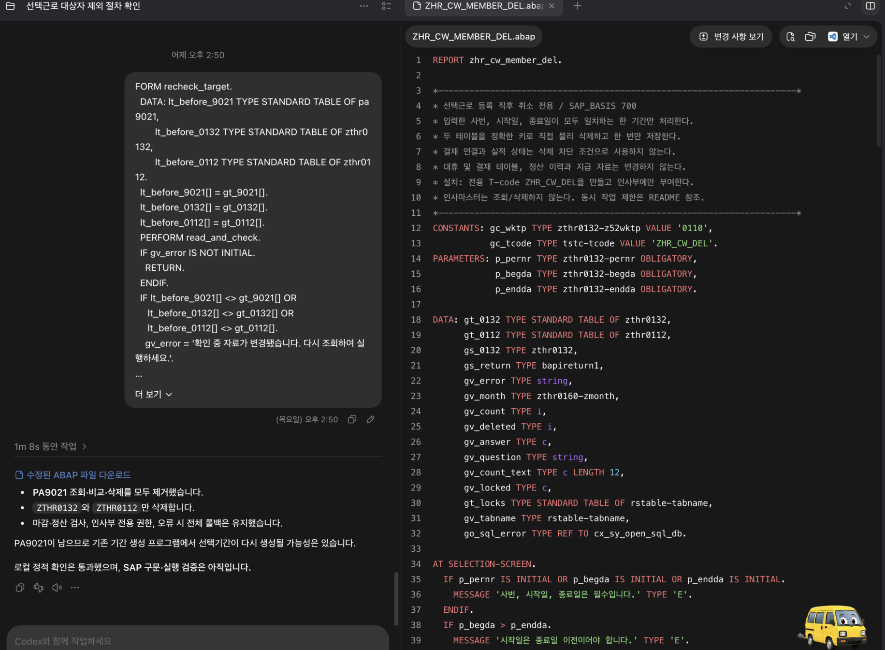
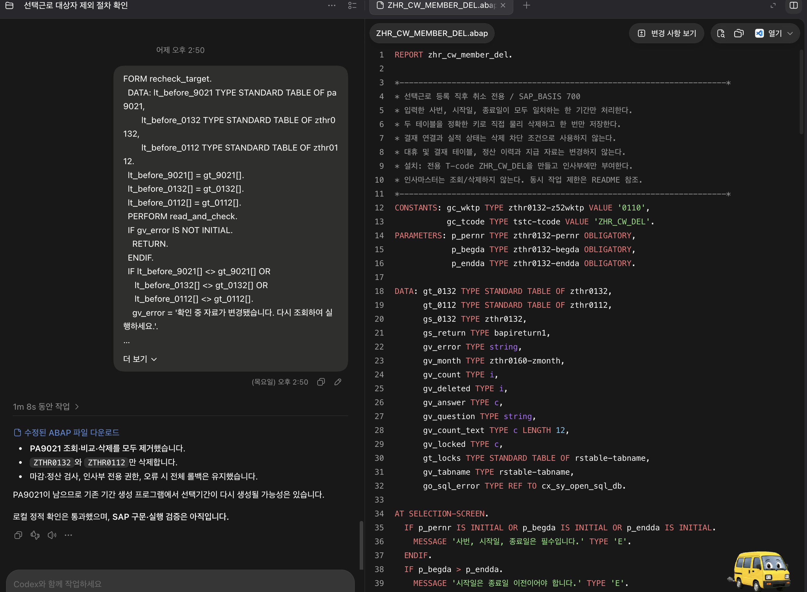
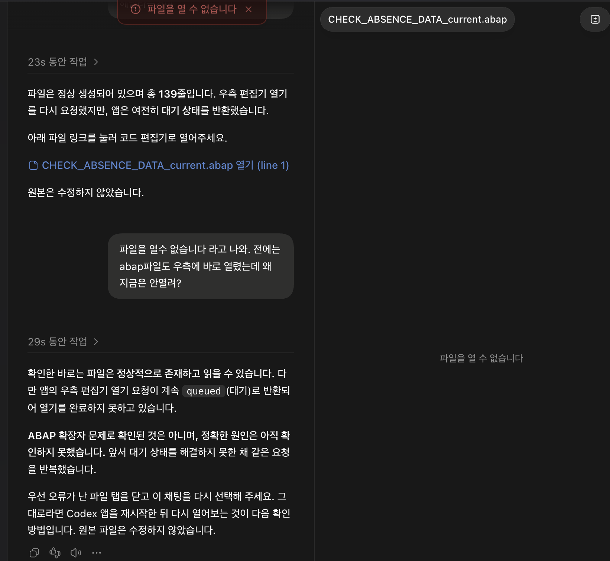

대화 전문 · 첨부 이미지 · 코드 제안 이력 · 원본/수정안 비교
images/attachment-01.png — 채팅 로그 내 첨부 이미지(전달 해상도)

images/attachment-02.png — 채팅 로그 내 첨부 이미지(전달 해상도)
images/codex-clipboard-b4a24630-7376-476f-b323-7a00df1b99db.png — 사용자 첨부 로컬 원본 파일

images/codex-clipboard-c3a7b28b-4134-4b4f-96fe-3a0cc97ba06a.png — 사용자 첨부 로컬 원본 파일
